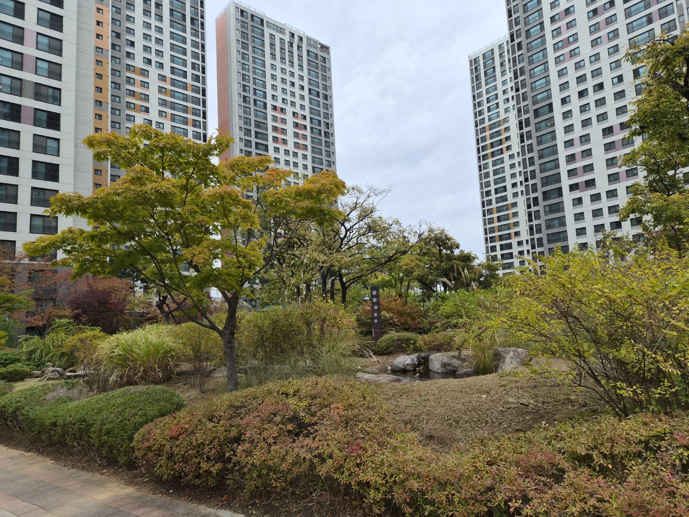
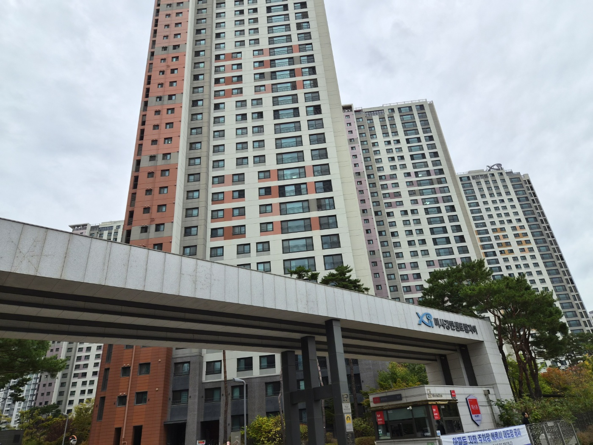

한홀초등학교
단지 인접 · 자료상 192m
정문까지의 길과 횡단 구간, 단지 출입구에서의 이동을 함께 확인해 보세요.
A HOME WITH A GARDEN
하남 미사강변의 일상을 만나다
정원이 있는 일상,
그 안에 당신의 집.
집 앞의 초록과 계절을 담은 산책길.
실제 단지의 풍경부터 나에게 맞는 공간까지,
단지 안 미사금호가 가까이에서 안내합니다.

집 앞에서 만나는 계절
THE RESIDENCE
반듯한 주거 공간과 그 사이를 채우는 정원.
센트럴자이를 이해하는 첫 번째 안내입니다.

경기도 하남시 풍산동
12개 동
주차 · 세대당 1.68대
2월 입주
용적률
35 · 37 · 39 · 51평
제공된 현장 브리핑(2026년 11월) 기준입니다.
세부 면적·구조·매물 조건은 상담 시 확인해 주세요.
THE SCENES, THE EVERYDAY
나무의 색이 바뀌고, 익숙한 길에 계절이 쌓입니다.
최근에 담은 실제 단지의 여섯 가지 풍경입니다.
센트럴자이 미사금호공인중개사사무소 제공 사진
교통·학교·평형 안내 살펴보기LIFE AT CENTRAL XI
출근길, 아이의 학교, 집 앞 산책까지.
나의 생활에 필요한 정보를 골라보세요.
하남시 풍산동 · 미사강변 생활권
미사역을 중심으로 한 생활권과 망월천 주변 산책 환경을 함께 살펴보세요. 같은 단지라도 동과 출입구에 따라 실제 이동 동선은 달라집니다.
제공 브리핑의 표기 거리입니다. 도보 거리·소요시간과 다를 수 있습니다.
희망 동에서 역·정류장까지 걷는 길, 횡단보도와 출입구, 출퇴근 시간대의 버스 이용 동선을 확인합니다.
SCHOOLS & DAILY ROUTES
단지 인근의 초·중·고교를 거리와 통학 동선 중심으로 살펴봅니다. 배정 학교는 주소와 해당 학년도 교육청 기준으로 확인합니다.
단지 인접 · 자료상 192m
정문까지의 길과 횡단 구간, 단지 출입구에서의 이동을 함께 확인해 보세요.
윤슬중 702m · 미사중 1.2km
제공 자료에는 한홀중의 2026년 개교가 소개되어 있습니다. 입학·전학 시 배정 가능 학교를 별도로 확인합니다.
하남고 299m · 풍산고 1.4km
미사강변고는 자료상 2.2km입니다. 통학 거리와 함께 학교별 지원·배정 기준을 확인합니다.
거리·학교 정보: 제공 브리핑 16~18쪽(2026년 11월). 거리는 자료 표기 기준이며 특정 학교 배정을 보장하지 않습니다.
A GARDEN IN EVERYDAY LIFE
건물 사이로 이어지는 산책로와 수경 공간, 다양한 식재가 단지의 풍경을 만듭니다. 레인가든 등 빗물 순환을 고려한 조경은 제공 자료에서 소개하는 특징입니다.
단지의 조경과 산책 환경을 사진으로 먼저 만나보세요.
관심 동·층의 조망과 동 간 거리, 일조, 창을 열었을 때의 소음은 현장 방문에서 확인합니다.
FIND YOUR SPACE
제공 거래 자료에는 96A·96B·96C 타입이 등장합니다. 같은 평형에서도 방 배치와 수납, 방향을 실제 도면으로 비교합니다.
왼쪽 이미지는 평면 예시 한 장입니다. 선택한 평형의 실제 도면으로 바뀌는 것은 아니며, 세부 구조는 타입별로 확인합니다.
AREA DEVELOPMENT
2026년 11월 제공 브리핑에 수록된 개발계획입니다. 사업 범위와 일정은 변동될 수 있어 상담 시 최신 공식 공고를 함께 확인합니다.
신미사역(가칭)이 소개된 노선입니다. 자료상 17.59km, 정거장 8곳으로, 개통 목표와 입찰 진행 상황을 구분해 살펴봅니다.
오금역~하남시청역을 연결하는 3호선 연장 계획과 교산지구 조성에 관한 내용입니다. 철도 개통과 입주 일정은 각각 확인합니다.
제공 자료에는 신규택지 후보지 발표와 기존 민간 공모 취소가 함께 기재되어 있습니다. 시설·규모가 확정된 것으로 해석하지 않습니다.
하산곡동 옛 미군 부대 부지 사업입니다. 브리핑에는 특수목적법인 설립 단계로 소개되어 있으며, 현재 추진 상황은 추가 확인이 필요합니다.
MARKET REFERENCE
리치고 추정 시세를 옮긴 참고 자료입니다.
현재 매물의 호가·실거래가와는 다릅니다.
| 공급 평형 | 매매 | 전세 | 전세가율 |
|---|---|---|---|
| 35평 | 15.35억 | 7.96억 | 51.9% |
| 37평 | 16.98억 | 9.28억 | 54.6% |
| 39평 | 17.65억 | 9.62억 | 54.5% |
| 51평 | 제공 자료에 시세 미표시 | ||
제공 브리핑 21·24쪽. 전세가율은 자료의 원수치 기준 표기입니다.
| 계약일 | 전용 타입 | 층 | 거래가 |
|---|---|---|---|
| 2026.10.09 | 96B | 17층 | 17억 1,000만 |
| 2026.10.07 | 96A | 10층 | 16억 9,000만 |
| 2026.08.08 | 96B | 22층 | 16억 6,500만 |
| 2026.08.07 | 96A | 15층 | 17억 500만 |
| 2026.07.30 | 96C | 3층 | 16억 9,000만 |
제공 브리핑 22쪽. 계약 판단 전 실거래 신고·해제 상태를 재조회합니다.
OUR SPECIALTIES
미사강변센트럴자이 아파트와 상가를 중심으로.
관심 분야를 선택하면 상담 안내가 바뀝니다.
APARTMENT · 주력 분야
미사강변센트럴자이를 중심으로 아파트 매매·전세·월세를 상담합니다. 평형뿐 아니라 동·층·방향과 입주 시기를 함께 살펴봅니다.
아파트 상담 전, 알려주세요
타입별 평면, 수리 상태, 관리비와 비슷한 조건의 거래 사례를 비교합니다.
YOUR LOCAL PARTNER
안녕하세요. 센트럴자이 미사금호공인중개사사무소
대표 공인중개사 홍종남입니다.
집을 선택할 때 궁금한 점, 계약을 앞두고 확인하고 싶은 점을 편하게 말씀해 주세요. 고객의 조건을 충분히 듣고, 현장에서 확인할 내용을 차분히 안내하겠습니다.
“신뢰와 고객만족을 최우선으로 약속합니다.”
예산과 일정, 중요하게 생각하는
생활 조건부터 이야기합니다.
사진만으로 알기 어려운 부분은
현장에서 하나씩 살펴봅니다.
매물의 조건과 진행 일정 등
궁금한 내용을 쉽게 안내합니다.
STORIES & CONNECTIONS
블로그·영상 소식부터 매물과 사무소 안내까지.
필요한 정보를 편하게 둘러보세요.
CENTRAL XI FIELD BRIEFING
단지 정보부터 현장 방문 체크리스트까지.
제공된 37쪽의 브리핑을 주제별로 열어보세요.
2026년 11월 제공 브리핑입니다. 사진·지도·평면 이미지의 출처는 각 자료 및 35~36쪽에 기재되어 있습니다.
COME VISIT US
미사강변센트럴자이 상가 104호
차량 방문 후문 진입 후 우회전하여 상가 주차장을 이용해 주세요. 자세한 진입은 전화로 안내해 드립니다.
방문 전 전화 주시면 상담 및 현장 방문 일정을
편하게 조율하실 수 있습니다.
QUESTIONS & ANSWERS
궁금한 점이 더 있으신가요?
전화로 편하게 문의해 주세요.
미사강변센트럴자이 아파트와 상가를 중심으로, 주택·오피스텔·빌딩·공장·토지의 매매·임대도 상담합니다. 희망 지역, 예산, 입주 시기를 알려주시면 상담 방향을 잡는 데 도움이 됩니다.
매물의 가격과 거래 가능 여부는 수시로 바뀔 수 있습니다. 대표 전화 031-795-1149로 문의하시면 현재 상담 가능한 매물을 안내해 드립니다.
현장 안내로 사무소를 비우는 경우가 있을 수 있으니, 방문 전 031-795-1149로 연락해 주세요. 상담 목적과 희망 시간을 말씀해 주시면 일정을 조율해 드립니다.
경기도 하남시 미사강변대로 95-2, 미사강변센트럴자이 상가 104호입니다. 파란색 ‘금호부동산’ 간판을 찾아주세요. 제공 안내 기준 후문으로 들어와 우회전하면 상가 주차장으로 연결됩니다. 방문 전 주차와 진입 동선을 전화로 확인해 주세요.
네, 매매·임대 의뢰도 상담합니다. 해당 주택의 위치와 평형, 희망 조건, 거래 시기를 알려주시면 확인할 사항을 안내해 드립니다.